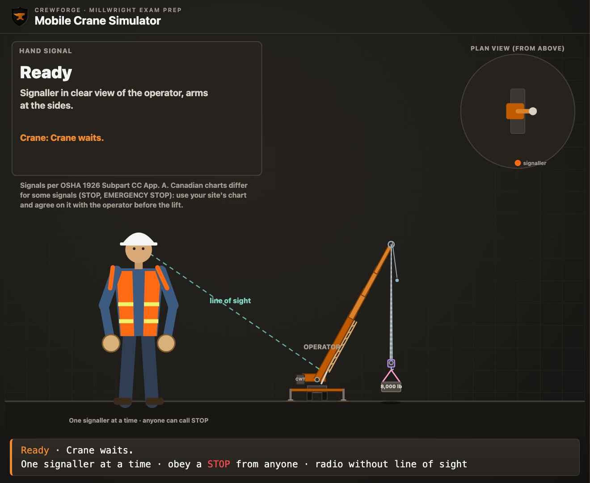
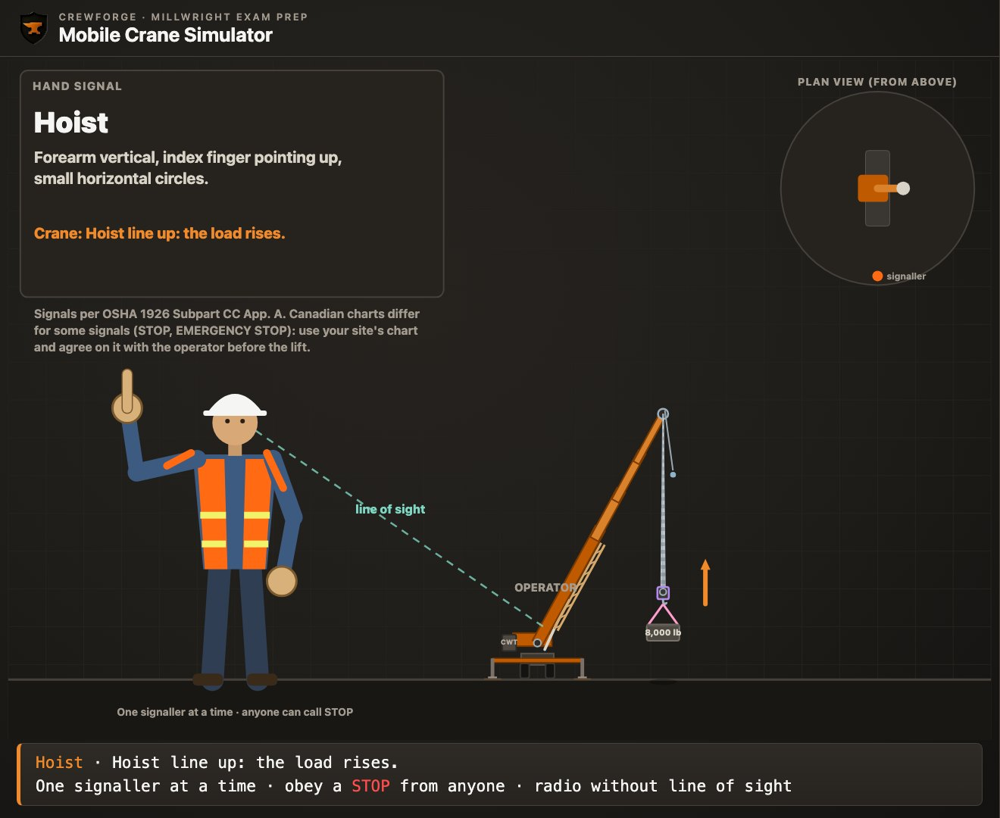
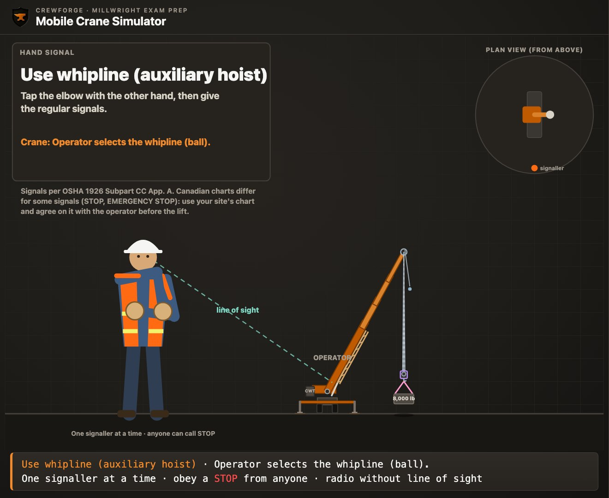
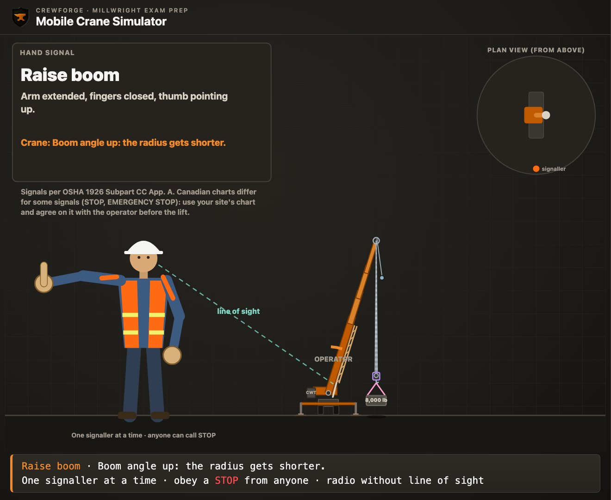
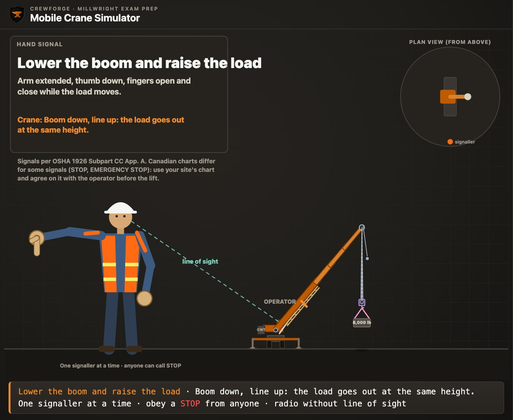
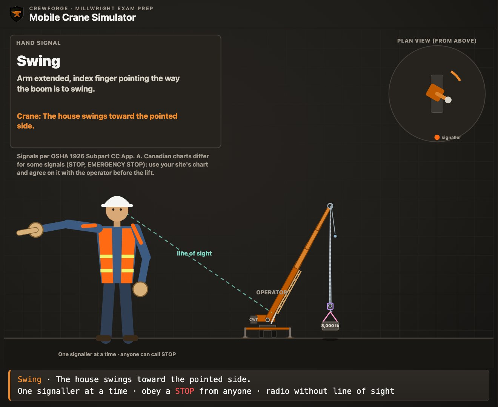
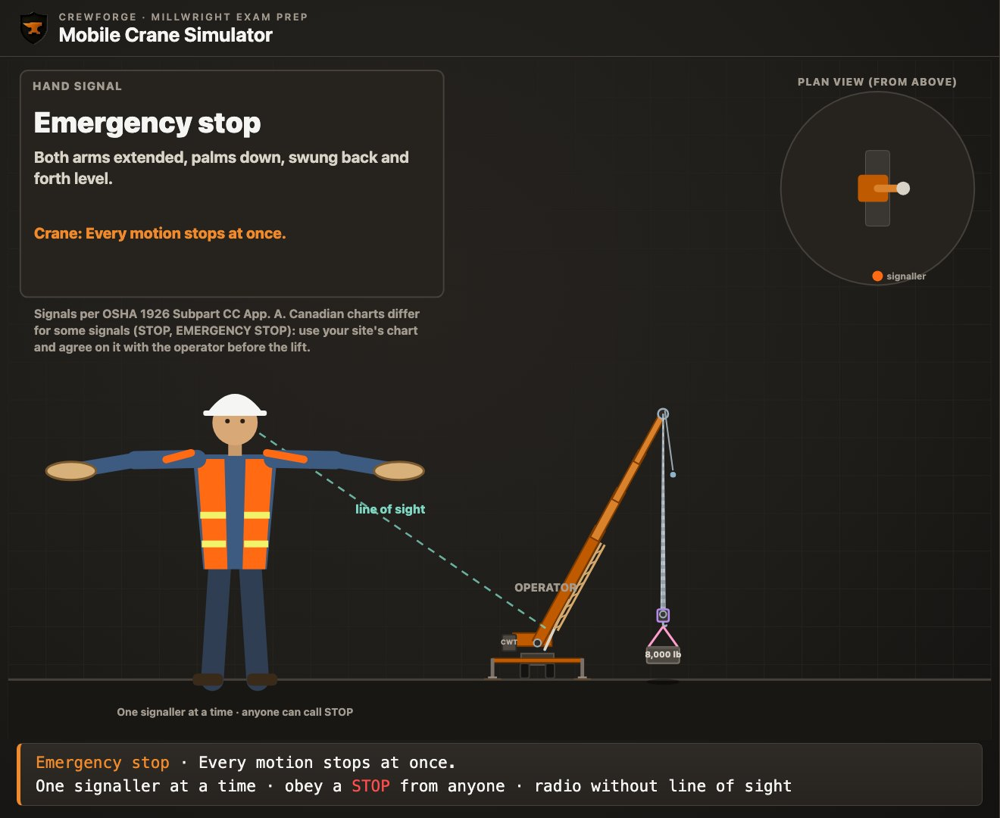

A load is swinging toward a worker. The signaller is looking the other way, and you see it first. You are not the signaller. Can you stop the crane? By the end of this lesson you will know the answer, and the rule that gives it.
Every lift in this course happens inside a set of rules, with a crew where each person has a job, and with one way of talking to the operator. This lesson starts there. You will see where the rules come from in Canada, who is responsible for what, and how a signaller runs a crane with hand signals or a radio.
Rules differ from province to province and from site to site. This lesson shows you what the main rules say, so you know where to look. It is exam preparation, not legal advice: on the job, your province's regulation, the crane maker's manual and your site's lift plan come first.
Watch the episode
The full episode · 12 min · AI narration
What you'll learn
- Explain how the rules for a lift are layered in Canada: the law, the standards it names, the maker's manual and the site's lift plan.
- Describe what the employer, the supervisor, the operator, the rigger and the signaller each do on a lift.
- Apply the signaller rules: when a signaller is needed, where to stand, one signaller at a time, and a stop from anyone.
- Identify the load line signals: hoist, lower, main hoist, whip line and move slowly.
- Identify the boom signals and calculate how each one changes the radius, with R = L × cos θ.
- Identify the swing signal and tell stop, emergency stop and dog everything apart.
- Choose another way to signal when there is no line of sight, and use a radio the way the rules ask.
- Plan the communication for a lift before it starts.
Key terms
- Regulation
- A law made under a province's health and safety act. It sets rules that workplaces must follow.
- Standard
- A detailed technical document, such as a CSA or ASME code. It becomes a must when a regulation names it.
- CSA
- The Canadian Standards Association. It writes standards such as CSA Z150 for mobile cranes.
- ASME
- The American Society of Mechanical Engineers. Its B30 standards cover cranes, slings and other lifting gear.
- RSOS
- The Red Seal Occupational Standard. It lists the tasks of a trade, and the Red Seal exam is based on it.
- Lift plan
- The plan for a lift, agreed before the load moves: the load, the rigging, the crane, the path, the people and how they will talk to each other.
- Competent worker
- In Ontario's construction rules, a worker who is qualified by knowledge, training and experience to do the work, knows the rules for it, and knows its dangers.
- Qualified person
- The word British Columbia's rules use for a person trained and experienced for a job, such as a qualified rigger or signaller.
- Supervisor
- The person in charge of the work and the workers. The supervisor makes sure the work is done the safe way the rules require.
- Operator
- The person at the crane's controls. Only the operator moves the crane.
- Rigger
- The person who picks and attaches the slings and hardware that join the load to the hook.
- Rigging
- The ropes, slings, chains and fittings used to attach and lift a load.
- Signaller
- The one person who directs the operator, by hand signals or by radio. Some rules call this person the signal person.
- Signal person
- Another name for the signaller, used in the RSOS and in the US crane rules.
- Load chart
- The maker's chart of how much the crane can lift for each boom length and radius.
- Crane rated capacity
- The most the crane maker's load chart says the crane may lift in one set-up: its boom length, radius and outrigger position.
- Relay person
- A second signaller who passes signals on when the operator can't see the first one.
- Line of sight
- A clear, straight view between two people or things, with nothing in the way.
- Hoist line
- The wire rope that runs from the drum, over the boom tip, to the hook. Hoisting reels it in. It is also called the load line.
- Hook block
- The heavy block with sheaves and a hook that hangs on the main hoist line.
- Main hoist
- The crane's main hoist line and its hook block.
- Whip line
- A second, lighter hoist line, also called the auxiliary hoist. It ends in a weighted ball and hook.
- Boom
- The long arm of the crane that holds the hoist line up and out.
- Boom angle (θ)
- The angle of the boom above level ground.
- Boom length (L)
- The length of the boom, from its foot pin to its tip.
- Radius (R)
- The level distance from the crane's centre of rotation to the hook.
- Telescoping boom
- A boom made of sections that slide out to make it longer, and back in to make it shorter.
- Swing
- Turning the crane's upper body, with the boom, to the left or the right.
- Dog everything
- The signal that stops every motion and holds the crane, with the brakes set, until the signaller starts again.
- Signal chart
- The picture chart of hand signals a crew agrees to use. Charts differ on a few signals.
- Parts of line
- The number of rope falls running between the boom tip and the hook block.
- Tag line
- A rope tied to the load so a worker can steady it from a safe distance.
- Two-way radio
- A radio that lets the signaller and the operator talk to each other.
- Dedicated channel
- A radio channel kept for the lift crew only, so no other talk gets in the way.
Where the rules come from
When two rules seem to disagree on a lift, you need to know which one wins.
In Canada, each province and territory has its own health and safety act, with regulations made under it. The regulation is the law on your site. That is why a rule in this lesson is always given with the place it comes from, such as Ontario or British Columbia. In Ontario there are two that matter here: O. Reg. 213/91 for construction projects, and Reg. 851 for industrial plants. In Atlantic Canada and the other provinces and territories, look up your own regulation the same way.
Some workplaces fall under federal law instead: banks, railways and transport that cross borders, telecommunications, ports, pipelines and most federal Crown corporations, such as Canada Post. They follow Part II of the Canada Labour Code and the Canada Occupational Health and Safety Regulations. Part XIV of those regulations covers materials handling, cranes included. It asks for one code of signals in all of an employer's workplaces, a signaller who does no other duties, and a stop from any person on the site, which the operator obeys.
A regulation can't hold every detail of crane design and inspection. So it names a standard and makes it part of the law. A standard is a detailed code written by a group such as CSA or ASME. A standard on its own is good practice. Once a regulation names it, it is a must.
| Standard | What it covers | Named in |
|---|---|---|
| CSA Z150 | Mobile cranes | Ontario O. Reg. 213/91 s.151; BC s.14.2(5); Alberta Code s.88; federal COHS Regulations s.14.21 |
| CSA Z248 | Tower cranes | Ontario O. Reg. 213/91 s.151; BC s.14.2(6) |
| CSA B167 | Overhead and gantry cranes, hoists | BC s.14.2(4); Alberta Code s.94 |
| ASME B30.5 | Mobile and locomotive cranes | BC s.14.2(5) |
| ASME B30.9 | Slings | BC s.15.30 |
Each regulation names a set edition of each standard. Check the edition your province names.
Below the law come the maker's papers. The crane maker's manual and load chart set the limits of that one machine. In Ontario, the maker or an engineer works out the crane rated capacity, which means the most it may lift in each set-up, to CSA Z150. The crane must carry a load rating chart the operator can read at the controls, or a plate that ties it to that crane's own charts, which the operator can read at the controls. Then comes your site: its procedures and the lift plan for the job in front of you.
The RSOS is a different kind of document. It is not a law. It lists the tasks of the millwright trade, and the Red Seal exam is based on it. It asks you to know the codes, standards and regulations for rigging and hoisting, to use hand signals, and to keep a direct line of sight between the operator and the signal person.
- Which makes a CSA standard something you must follow on a site?
Answer
A regulation that names it. On its own, a standard is good practice.
- Which document is the Red Seal exam based on?
Answer
The RSOS, the Red Seal Occupational Standard.
Who does what on a lift
A lift goes wrong when two people think the other one checked.
A lift is a team job. Each person has a part, and the rules give each part to someone. The words differ by province. Ontario says competent worker or competent person; British Columbia says qualified person. Both mean someone with the knowledge, training and experience for that job.
| Role | Main job on a lift | Where it is written |
|---|---|---|
| Employer | Provides safe equipment, training and a competent supervisor | Ontario OHSA s.25 |
| Supervisor | Makes sure the work is done the safe way; warns workers of dangers | Ontario OHSA s.27 |
| Operator | Runs the crane; holds the operator's certificate where one is required | Ontario O. Reg. 213/91 s.150; BC s.14.34.1 |
| Rigger | Picks and attaches the rigging; knows the code of signals | BC s.15.2 |
| Signaller | Directs the operator when the operator can't see | Ontario s.106; BC s.14.47; Alberta s.71 |
| Every worker | Reports hazards and defects to the supervisor | Ontario OHSA s.28 |
| Tag line handler | Steadies the load from a safe spot, where the load can't strike them; may give stop, not other signals | Alberta s.70(1); IHSA |
| Anyone on the job | May give the stop signal when something is unsafe; the operator must obey it | IHSA; CCOHS; US OSHA 1926.1419(j); obey: BC s.14.47(2) |
A summary of what the rules say. Your site may give some jobs to other people.
The operator
The operator is the only person who moves the crane. On Ontario construction projects, a mobile crane that can lift more than 16,000 lb (about 7,260 kg) needs an operator with a certificate of qualification as a hoisting engineer, or a registered apprentice. British Columbia requires a valid operator's certificate for mobile cranes, tower cranes and boom trucks. In British Columbia the operator does no other duties while operating, and in Alberta an operator who has any doubt about the safety of workers must not move the load.
The rigger and the load weight
The rigger chooses the rigging and attaches it. In British Columbia, rigging is done by, or under the direct watch of, qualified workers who know the rigging and the code of signals. The weight of each load must be worked out and passed to both the operator and the person rigging it. As a millwright you will often be the rigger, and on many jobs the signaller too.
The signaller
The signaller is the operator's eyes. In Alberta the employer designates a competent signaller. On Ontario construction projects the signaller is a competent worker who does no other work while signalling. The next part of this lesson covers the signaller's rules in full.
You are rigging a gearbox. As the load lifts, you see that one sling is caught on a flange. You are not the signaller. What do you do?
Try it first, then show the working
- A caught sling is a safety problem, and the load is moving.
- Anyone who sees a safety problem may give the stop signal, and the operator must obey it.
- Give the stop signal at once. Then tell the signaller what you saw.
Answer: Give the stop signal. Once the crane has stopped, tell the signaller, and let the crew fix the sling before the lift goes on.
The supervisor walks up and starts waving the load toward a new spot while the signaller is still giving signals. What should happen?
Try it first, then show the working
- Only one person gives signals to the operator at a time.
- Two people signalling can send two different commands at once.
- The operator stops and waits until the crew agrees who is signalling.
Answer: The operator should stop. One signaller at a time; if the plan changes, the crew agrees on it first, and the signaller gives the new signals.
- Who is the only person who moves the crane?
Answer
The operator.
- In British Columbia, who must the load weight be passed to?
Answer
The operator and the person rigging the load.
The signaller and the line of sight
The operator can't see everything. The signaller sees what the operator can't.
On Ontario construction projects, an operator must have a signaller if the operator can't see the path the load will take, or if a person could be hurt by the crane or its load. In British Columbia, an operator who can't see the boom, the load line, the hook and the load the whole way must act only on a qualified signaller's directions. In plants, Ontario's industrial rule is the same idea: if the operator can't see the path, the crane moves only as a competent signaller directs.
Where the signaller stands
The signaller needs two views at once. The operator must be able to see the signaller, and the signaller must see the load and its path, especially the part the operator can't see. That clear view is the line of sight. The signaller also stays clear of the load's path.

On Ontario construction projects, the signaller is a competent worker, does no other work while signalling, and wears a fluorescent blaze or international orange garment with yellow retro-reflective stripes. Where the signaller can't be in full view of the operator, the employer must give another clear and direct way to talk, such as a radio.
Four rules every signaller lives by
- One signaller at a time: only one person gives signals to the operator during a lift.
- A stop from anyone: anyone who sees danger can give the stop signal, and the operator must obey it, whoever gives it.
- Agree first: the operator and the signaller agree on the signals and how they will work before the lift starts.
- When in doubt, stop: an operator should never act on a signal that is not clear, and stops if the signaller can't be seen.
CCOHS adds that a signaller must have the right knowledge, training and experience. The provinces use different words for that: competent in Ontario and Alberta, qualified in British Columbia.
A pump is going down into a pit beside a building. The operator can see the crane's boom but not the bottom of the pit. Where should the signaller stand?
Try it first, then show the working
- The operator can't see the load's path into the pit, so a signaller is needed.
- The signaller must see the bottom of the pit and the load.
- The operator must still be able to see the signaller, and the signaller must stay clear of the load's path.
Answer: At the edge of the pit, clear of the load, where the operator can see the signaller and the signaller can see the bottom of the pit. If no such spot exists, use radios.
- A labourer who is not the signaller gives the stop signal. What does the operator do?
Answer
Stops. A stop signal is obeyed whoever gives it.
- The operator loses sight of the signaller during a lift. What should happen?
Answer
The operator stops until they can see each other again or talk another way.
Signals for the load line
The finger moves the load. Learn these first, because you will give them most.
The hand signals in this lesson follow one signal chart: the Standard Method in the US crane rules, which is also the chart the CrewForge simulator shows. The Canadian charts from CCOHS and IHSA agree with it on most signals, but not all. They show stop and emergency stop differently, and CCOHS draws the combined boom-and-load signals with the second hand. British Columbia's regulation requires the signals in its own chart, Figure 15-1. So before every lift, the crew agrees on one chart.
On every chart, a signal that uses the index finger moves the hoist line, and a signal that uses the thumb moves the boom. Keep that one idea, and most of the signals fall into place.
| Signal | How it is given | What the crane does |
|---|---|---|
| Hoist | Forearm up, index finger up, small circles | The hook comes up |
| Lower | Arm down, index finger down, small circles | The hook goes down |
| Use main hoist | Tap a fist on top of the head, then give the signal | The main hoist line is used |
| Use whip line | Tap the elbow with the other hand, then give the signal | The whip line is used |
| Move slowly | The other hand held still in front of the signal hand | The same motion, slowly |
Paraphrased from the OSHA Standard Method chart (US 1926 Subpart CC Appendix A). Check each one against the chart your site uses.

Many cranes have two hoist lines. The main hoist carries the heavy hook block. The whip line, also called the auxiliary hoist, is lighter and faster and ends in a weighted ball. Before the hoist signal, the signaller can choose the line. A tap on top of the head means the main hoist, and a tap on the elbow means the whip line. The signals after the tap work that line.

Move slowly is not a motion of its own. It is a still hand held in front of any motion signal. Use it for the last few inches as a load lands, or when the load is close to something.
- A signaller taps the top of the head, then gives the lower signal. What moves?
Answer
The main hoist hook goes down.
- What does a still hand held in front of the hoist signal mean?
Answer
Hoist slowly.
Boom signals and the radius
A boom signal changes the radius, and the radius decides how much the crane can lift.
The thumb signals move the boom. Arm out, fist closed, thumb up: raise the boom. Thumb down: lower the boom. Raising or lowering the boom changes the boom angle (θ), and that changes the radius (R), the level distance out to the hook.
L = boom length; θ = boom angle above level
On the CrewForge example crane the boom's foot pin sits over the centre of rotation, so the radius before the load comes up is just L × cos θ. On a real crane the maker's chart and the crane's own indicator give the radius; the formula shows you which way it moves and by about how much.
What cos means, and how to get it
Cos, short for cosine, is a ratio. In the boom's triangle, cos θ is the radius divided by the boom length: cos θ = R ÷ L. It tells you what share of the boom's length lies flat along the ground. A flat boom has all of it, so cos 0° is 1. A steep boom has little of it, so the cosine shrinks as the angle grows.
| Boom angle θ | 30° | 40° | 45° | 50° | 60° | 70° | 75° |
|---|---|---|---|---|---|---|---|
| cos θ | 0.8660 | 0.7660 | 0.7071 | 0.6428 | 0.5000 | 0.3420 | 0.2588 |
| R for a 64 ft boom | 55.43 ft | 49.03 ft | 45.25 ft | 41.14 ft | 32.00 ft | 21.89 ft | 16.56 ft |
Read across: as the boom goes up, cos θ and the radius both get smaller.
To get a cosine, first set your calculator to degrees. Look for DEG on the screen; RAD or GRAD gives wrong answers. Then press cos, type 60 and press equals: the screen shows 0.5. On some calculators you type 60 first and then press cos. Multiply by the boom length to get the radius.
- What is cos 50°, to four decimal places?
Answer
0.6428
- A 40 ft boom hangs its hook 20 ft out. What is cos θ, and so what is the boom angle?
Answer
cos θ = 20 ÷ 40 = 0.5, so θ = 60°.
A 64 ft boom is at 60°. The signaller gives raise the boom until it reaches 70°. What is the radius before and after?
Try it first, then show the working
- Before: 64 × cos 60° = 64 × 0.5000 = 32.00 ft
- After: 64 × cos 70° = 64 × 0.3420 = 21.89 ft
- The hook moved 10.11 ft closer to the crane
Answer: 32.00 ft before, 21.89 ft after: the radius got shorter
A 48 ft boom is at 65°. The signaller gives lower the boom until it reaches 45°. What happens to the radius?
Try it first, then show the working
- Before: 48 × cos 65° = 48 × 0.4226 = 20.29 ft
- After: 48 × cos 45° = 48 × 0.7071 = 33.94 ft
- The radius grew by 13.66 ft
Answer: It grows from 20.29 ft to 33.94 ft

A 24.38 m boom is at 55°. It is raised to 65°. What is the radius before and after?
Try it first, then show the working
- Before: 24.38 × cos 55° = 24.38 × 0.5736 = 13.98 m
- After: 24.38 × cos 65° = 24.38 × 0.4226 = 10.30 m
Answer: 13.98 m before, 10.30 m after
Telescoping: same angle, new length
A telescoping boom gets longer or shorter. Both fists in front of the body, thumbs pointing out: extend the boom. Thumbs pointing toward each other: retract it. At the same angle, a longer boom puts the hook further out, so extending the boom also makes the radius longer.
A 40 ft boom is at 50°. The signaller gives extend the boom until it is 56 ft long, at the same angle. What is the new radius?
Try it first, then show the working
- Before: 40 × cos 50° = 40 × 0.6428 = 25.71 ft
- After: 56 × cos 50° = 56 × 0.6428 = 36.00 ft
Answer: The radius grows from 25.71 ft to 36.00 ft
The two combined signals
Two signals move the boom and the load line together. Thumb up with the fingers opening and closing: raise the boom and lower the load. Thumb down with the fingers working: lower the boom and raise the load. In both, the load moves in or out while it stays at about the same height. To do that, the hook has to drop below the tip, or rise toward it, by the same amount the boom tip rises or falls.
That is the drop of the hook, not the rope off the drum. Most hook blocks hang on more than one part of rope. The parts of line means the rope falls between the tip and the block. With four parts, the drum pays out about four times the hook's drop.
This uses the other ratio, sin, short for sine. Sin θ is the boom tip's height above the foot pin divided by the boom length. You get it the same way, with the sin key, in degrees.
tip rise = L × (sin θ₂ − sin θ₁)
A 64 ft boom goes from 50° to 60° on the raise-the-boom-and-lower-the-load signal. On the example crane the foot pin is 9 ft up. How far does the tip rise, and how far must the hook drop below the tip?
Try it first, then show the working
- Tip height at 50°: 9 + 64 × sin 50° = 9 + 49.03 = 58.03 ft
- Tip height at 60°: 9 + 64 × sin 60° = 9 + 55.43 = 64.43 ft
- Rise: 64.43 − 58.03 = 6.40 ft
- Meanwhile the radius goes from 41.14 ft to 32.00 ft
Answer: The tip rises 6.40 ft, so the hook drops about 6.40 ft below the tip and the load comes 9.14 ft closer at the same height. With four parts of line, the drum pays out about 25.60 ft of rope

Why a wrong boom signal is dangerous
A crane can lift less the further out the hook is. So a thumb given where a finger was meant can take a safe lift past the chart. The numbers below come from the CrewForge example chart, which is made up for training. Never use it to plan a real lift.
The chart is read at the loaded radius, with the load lifted. The boom bends a little under the load, so the hook hangs a bit further out than L × cos θ. If the loaded radius falls between two rows, use the next row out. Lesson MW-007 covers chart reading in full.
A 48 ft boom is at 60°, with a 28,000 lb gross load lifted clear. The example chart's 48 ft column gives 37,800 lb at the 25 ft row, 25,500 lb at the 35 ft row and 20,300 lb at the 40 ft row. The signaller means lower, but gives lower the boom, and the boom comes down to 45°. What happens?
Try it first, then show the working
- Before: R = 48 × cos 60° = 24.00 ft. With the load up, the boom bends and the hook moves out 0.94 ft, so the loaded radius is 24.94 ft. Use the 25 ft row: 37,800 lb
- 28,000 ÷ 37,800 = 74.1 % of the chart
- After: R = 48 × cos 45° = 33.94 ft, and the bend adds 1.08 ft: loaded radius 35.02 ft
- That is past the 35 ft row, so use the next greater row, 40 ft: 20,300 lb
- 28,000 ÷ 20,300 = 137.9 % of the chart
Answer: The lift goes from 74.1 % to 137.9 % of the example chart: far over capacity. The wrong signal, not the load, put the crane at risk of tipping.
- Does raising the boom make the radius longer or shorter?
Answer
Shorter.
- A 32 ft boom is at 60°. What is the radius?
Answer
32 × cos 60° = 16.00 ft
Swing, and the three ways to stop
Stop, emergency stop and dog everything look alike, and each means something different.
Swing turns the crane's upper body and the boom. Arm out level, index finger pointing the way the boom should go. The finger points the way the boom is to swing, so the operator follows the finger.

There are three signals that halt the crane, and the exam likes to mix them up. This is also where the charts differ most, so learn the chart your site uses, and read which chart an exam question shows.
| Signal | OSHA chart (this lesson) | CCOHS chart | IHSA chart |
|---|---|---|---|
| Stop | One arm out, palm down, swung back and forth | Arm out, palm down, held still | Arm out, palm down, hand moved fast back and forth at the elbow |
| Emergency stop | Both arms out, palms down, swung back and forth | Arm out, palm down, hand moved fast right and left | Not shown as a separate signal |
| Dog everything | Hands held together at the waist | Hands clasped in front of the body | Hands clasped in front of the body |
Paraphrased from each chart. Agree on one chart before the lift, so every signal means one thing.

Dog everything is a pause. The crane holds still, and nothing moves until the signaller starts again. IHSA says what the operator does: puts every control lever in neutral and sets all the brakes and locks. CCOHS gives an example of when to use it: something changes that makes the lift risky, such as rain starting.
A load is coming down well, but a truck pulls into the landing area to unload. Nobody is in danger, but the load must hang there for several minutes until the truck leaves. Which signal fits best?
Try it first, then show the working
- Nobody is in danger this second, so an emergency stop is more than the job needs.
- A plain stop halts the motion, but this is a long hold.
- Dog everything halts every motion and holds the crane until the signaller starts again.
Answer: Dog everything. If someone were about to be hit, the emergency stop would be right.
Travel signals
The charts also have travel signals, which you will see on crawler cranes and on the overhead cranes in plants. On the CCOHS chart, crawler travel is the fists revolving around each other. Bridge travel is the arm forward, hand open, with a pushing motion the way to go. Trolley travel is the palm up, thumb pointing the way, with the hand jerked sideways.
In a plant, you are moving a gearbox down the bay with the overhead crane, to a bench on the far side of the bay. The operator runs the crane from a pendant and agrees with you to use the CCOHS chart. Which signals move it there?
Try it first, then show the working
- Hoist until the load just clears everything in its path.
- Bridge travel: arm forward, hand open, pushing toward the far end of the bay.
- Trolley travel: palm up, thumb pointing toward the bench, hand jerked sideways.
- Lower, with the other hand held still in front for the last few inches.
- Stop: on the CCOHS chart, the arm out, palm down, held still.
Answer: Hoist, bridge travel, trolley travel, lower slowly, then stop. The bridge moves along the bay; the trolley moves across it.
- On the OSHA chart, what does both arms out, palms down and swung back and forth mean?
Answer
Emergency stop.
- Which way does the finger point in a swing signal?
Answer
The way the boom is to swing.
- On the CCOHS chart, what does an arm held out, palm down and perfectly still mean?
Answer
Stop.
- On the CCOHS chart, which signal is the arm forward, hand open, pushing the way to go?
Answer
Bridge travel.
No line of sight: the radio
Hand signals only work when the operator can see them.
When the load goes behind a wall, into a pit or over a roof, the operator may not be able to see the signaller at all. Hand signals stop working. The RSOS lists the other ways a crew talks then: two-way radio, bell signals, horns, lights, or a relay person.
- Two-way radio: the signaller talks the operator through each move.
- Bells, horns and lights: a short code, such as one sound for stop, that the crew agrees on before the lift.
- A relay person: a second signaller who can see both the first signaller and the operator, and passes each signal on.
The rules point to the radio. In British Columbia, a two-way radio or another approved system must be used when distance, weather or other conditions make hand signals unsafe or impractical. In Ontario, the signaller talks to the operator by a telecommunication system, or by visual signals agreed on before the lift when the operator can clearly see them.
How the radio is used
The US crane rules, OSHA's, set out four points for radios. They are a published reference here, not Canadian law, and your province's rules and site plan come first.
- Test the radios on site before the lift starts.
- Use a dedicated channel, kept for the lift crew. The operator's radio is hands-free.
- With more than one crane, name the crane before each command.
- If contact is lost, the operator stops until it is back and a clear signal is given.
How a voice command is said
The US crane rules also set the order of a voice command, and the crew agrees on the voice signals before the lift. Say the function first, then the direction, then the distance or speed, and then stop. Give left and right from the operator's point of view, because the operator can't see which way you face.
for example: Crane 1 … swing left … slowly … stop
In British Columbia, the radio for a tower crane must use its own assigned channel, and radios with several channels are not allowed for directing a crane. Everything from the hand signal rules still applies on the radio: one voice gives the signals, and a stop from anyone is obeyed.
A crane must set a motor inside a building, over a wall. The operator can't see the landing spot or anyone inside. How should the crew talk?
Try it first, then show the working
- Hand signals won't work: the operator can't see the signaller inside.
- Plan for radio before the lift: pick the channel and test it with the operator.
- One signaller inside gives every command by radio, and the crew agrees how a stop is called.
Answer: By radio, set up in the lift plan and tested before the lift, with one signaller giving the commands.
Two cranes are on the job, and a pump must come up about ten feet on crane 2 by radio. Write the call.
Try it first, then show the working
- Name the crane first: "Crane 2."
- Then the function and the direction: "Hoist, up."
- Then the distance, counting it down as the load moves: "Ten feet … five … two … one."
- Then stop: "Stop."
Answer: "Crane 2, hoist up, ten feet … five … two … one … stop." If the operator stops hearing you, the crane stops.
A signaller is talking to two cranes on the same job. What must every radio command include?
Try it first, then show the working
- Both operators hear the same voice.
- Each command must say which crane it is for.
Answer: The name of the crane, said before the command, so only that crane moves.
- Name two ways to talk to the operator other than hand signals.
Answer
Any two of: two-way radio, bell signals, horns, lights, a relay person.
- When must the radios be tested?
Answer
On site, before the lift starts.
Putting it together: before the lift
Talking is part of the lift plan. Agree on it before the hook moves.
Here is the order a crew works through. Your site's procedures and the lift plan come first; this is the thinking behind them. On Ontario construction projects the operator and the signaller must set up their procedures together and follow them.
- Check the rules: the regulation, the maker's chart and the site's lift plan for this lift.
- Name the crew: who operates, who rigs and who is the one signaller.
- Pick the signaller's spot, with a view of the load and in the operator's view.
- Agree on the signal chart and, if needed, set up and test the radios.
- Tell the whole crew that a stop from anyone will be obeyed.
- Give the signals, and stop at once if contact is lost or a signal is not clear.
Your crew is lifting a 2,400 lb (about 1,090 kg) motor onto a mezzanine with a mobile crane. The operator can see the mezzanine edge but not the motor base behind a guard rail. Two labourers will steady the load with tag lines. Plan the communication.
Try it first, then show the working
- A signaller is needed: the operator can't see where the load lands.
- Name one signaller, on the mezzanine, in the operator's view and with a view of the motor base.
- Agree on one signal chart with the operator, and go over hoist, swing, lower, move slowly, stop and dog everything.
- If the signaller can't stand in the operator's view, set up radios on a channel kept for the lift and test them.
- Tell the labourers on the tag lines that they may give the stop signal, but not other signals.
- Land the motor slowly, and dog everything while the rigging is removed once the load is supported.
Answer: One signaller on the mezzanine, signals agreed with the operator first, radios if the view is blocked, and everyone told that anyone may call a stop.
Key formulas
| The rules | regulation (law) → standards it names (CSA, ASME) → maker's manual and load chart → site lift plan |
| Signaller | one at a time; in the operator's view; sees the load; stop from anyone |
| Load line | index finger: hoist (up, circles), lower (down, circles) |
| Pick the line | tap the head: main hoist; tap the elbow: whip line |
| Boom | thumb up: raise (R shorter); thumb down: lower (R longer) |
| Radius | R = L × cos θ |
| Combined | thumb + fingers working: boom one way, load line the other, load at about the same height |
| Stops (OSHA chart) | one arm: stop; two arms: emergency stop; hands clasped: dog everything. Charts differ: agree on one |
| Swing | the finger points the way the boom is to swing |
| No line of sight | radio: tested, dedicated channel, name the crane, stop if contact is lost |
| Voice command | function, direction, distance or speed, stop; left and right are the operator's |
Where people lose marks
- Mixing up the finger and the thumb. The index finger moves the load line. The thumb moves the boom.
- Thinking only the signaller can stop the crane. Anyone who sees danger may give the stop signal, and the operator must obey it.
- Letting two people signal at once. One signaller at a time. Change signallers only when the crew has agreed.
- Mixing up stop, emergency stop and dog everything. Learn the chart your site uses. On the OSHA chart: one arm, two arms, or hands clasped at the waist.
- Assuming every crew uses the same signal chart. Charts differ on stop and emergency stop. Agree on one chart before the lift.
- Giving voice directions from your own side. By radio or voice, left and right are the operator's left and right.
- Thinking the drum pays out only the tip rise. The hook drops that far below the tip; the drum pays out that times the parts of line.
- Keeping hand signals going when the operator can't see. Use a radio or another agreed method, set up before the lift.
- Thinking a boom signal only moves the boom. Raising or lowering the boom changes the radius, and so the chart capacity.
- Treating a standard as optional when a regulation names it. Once a regulation names a standard, it is part of the law.
Simulator challenge
Open the simulator in signals mode. A 64 ft boom is at 50°. Work out the radius after the signaller raises the boom to 65°, then call the moves to bring the load in, swing it and land it slowly.
Practice quiz
8 exam-style questions. Pick an answer to see the worked solution and the simulator set up exactly as the question describes.
Practice problems
Show your working on paper, then check it.
A 56 ft boom is at 40°. What is the radius?
Show the working
- R = 56 × cos 40° = 56 × 0.7660 = 42.90 ft
Answer: 42.90 ft
A 19.51 m boom is at 60°. What is the radius?
Show the working
- R = 19.51 × cos 60° = 19.51 × 0.5000 = 9.76 m
Answer: 9.76 m
An 80 ft boom is lowered from 70° to 55°. How much longer does the radius get?
Show the working
- At 70°: 80 × cos 70° = 27.36 ft
- At 55°: 80 × cos 55° = 45.89 ft
- Change: 45.89 − 27.36 = 18.52 ft
Answer: 18.52 ft longer
A 14.63 m boom at 50° is extended to 24.38 m at the same angle. What is the new radius?
Show the working
- R = 24.38 × cos 50° = 24.38 × 0.6428 = 15.67 m
Answer: 15.67 m
A 48 ft boom goes from 40° to 55° on the raise-the-boom-and-lower-the-load signal. How far does the tip rise, and how far must the hook drop below it?
Show the working
- 48 × sin 55° = 39.32 ft; 48 × sin 40° = 30.85 ft
- Rise: 39.32 − 30.85 = 8.47 ft
Answer: About 8.47 ft, so the hook must drop that far below the tip to hold the load's height
The signaller holds one hand still in front of the other hand, which gives the lower signal. What does the operator do?
Show the working
- The pointing finger down with circles is lower.
- The still hand in front means do it slowly.
Answer: Lowers the load slowly.
Two cranes share one signaller on a radio. The signaller says only "swing left". What is wrong?
Show the working
- Both operators hear the command.
- Each command must name the crane it is for.
Answer: The crane was not named, so either crane might move. Name the crane before each command.
In British Columbia, which standard does the regulation name for slings?
Show the working
- WorkSafeBC OHS Regulation s.15.30 names the sling standard.
Answer: ASME B30.9, Slings.
Printable textbook chapter
MW-008 · Canadian Rigging Rules, Roles and Signals
This whole lesson as a printable chapter, formatted to be light on toner: every explanation, diagram and worked example, the key formulas, common mistakes, practice questions with full answers at the back, and sources. Every lesson in the program comes with one, and each level's chapters build into a full CrewForge textbook.
These are 4 lessons. The full Level 1 has 40.
Every Level 1 lesson comes like these, plus scored simulator challenges, unit tests, a timed level exam, progress tracking and a certificate of completion. Early access members also watch new episodes before they're on YouTube, with no ads.
Canadian dollars, before tax.
Sources
- Red Seal Occupational Standard (RSOS), Industrial Mechanic (Millwright), Tasks B-9 and B-10 (B-9.01.04L identify codes, standards and regulations; B-10.02.01P line of sight; B-10.02.02P hand signals and verbal communication; B-10.02.03P alternate communication; range: two-way radio, bell signals, horns, lights, relay person) (red-seal.ca/eng/trades/industrialmech/mwa-b.shtml); Red Seal, What is an occupational standard? (red-seal.ca/eng/resources/what-is-occ-std.shtml)
- Ontario O. Reg. 213/91 (Construction Projects), e-Laws: s.1 competent worker; s.104(3)–(5) signallers; s.106 signaller duties and garment; s.150 crane operators; s.151 rated capacity to CSA Z150 and load rating chart; s.172 rigging (ontario.ca/laws/regulation/910213)
- Ontario R.R.O. 1990, Reg. 851 (Industrial Establishments), e-Laws: s.51 lifting devices; s.56 signallers (ontario.ca/laws/regulation/900851)
- Ontario Occupational Health and Safety Act, e-Laws: s.1 competent person; s.25 employer; s.27 supervisor; s.28 worker (ontario.ca/laws/statute/90o01)
- WorkSafeBC OHS Regulation Part 14, Cranes and Hoists: s.14.2 standards; s.14.34.1 operator certification; s.14.36 load weight; s.14.37.1 operator's duties; s.14.47 signals; s.14.48 alternative to hand signals; s.14.49 dedicated radio system (worksafebc.com, searchable OHS Regulation, Part 14)
- WorkSafeBC OHS Regulation Part 15, Rigging: s.15.1 rigging; s.15.2 qualified riggers; s.15.3 detaching loads; s.15.20 hand signals; s.15.30 ASME B30.9 slings (worksafebc.com, searchable OHS Regulation, Part 15)
- Canada Labour Code Part II and the Canada Occupational Health and Safety Regulations, SOR/86-304, Part XIV Materials Handling: s.14.21, 14.25–14.27 (laws-lois.justice.gc.ca); Government of Canada, Federally regulated businesses and industries (canada.ca)
- Alberta OHS Code Part 6, Cranes, Hoists and Lifting Devices: s.64 operator; s.66 preventing an unsafe lift; s.70 tag lines; s.71 hand signals; s.88 CSA Z150; s.94 CSA B167 (search-ohs-laws.alberta.ca)
- US OSHA 29 CFR 1926 Subpart CC, Appendix A, standard hand signals (public domain; wording paraphrased); 1926.1419 signals (one person at a time; stop from anyone; operator's direction; name the crane; stop if contact is lost); 1926.1420 radio (tested on site, dedicated channel, hands-free); 1926.1421 voice signals (function, direction, distance or speed, stop) (osha.gov; ecfr.gov). Used as a published reference, not as Canadian law.
- CCOHS, OSH Answers, Materials Handling – Signals (one signaller; obey STOP from anyone; clear view; radio when visual signals won't work; its chart: stop held still, emergency stop one hand moved fast, swing, bridge, trolley and crawler travel) (ccohs.ca/oshanswers/safety_haz/materials_handling/signals.html)
- IHSA, Hand signals for hoisting and crane operations (one person signals; anyone can give STOP; agree on signals before the lift; never respond to an unclear signal; its chart: stop, dog everything with levers in neutral and brakes set) (ihsa.ca/hand-signals-hoisting-crane-operations)
- Example load chart: made up for CrewForge training from a simple model of a 40-ton-class crane, in the CrewForge mobile crane simulator. It is not any real crane's chart. Never lift from it.
- Every worked radius, tip height and chart number checked against the CrewForge mobile crane simulator
Exam preparation, not a procedure. Always check the sling tag, the manufacturer's charts and your lift plan.